| Home | Kontakt | Steckbrief |
| Wandern/Trekking |
| Klettern/Klettersteige |
| Kanu |
| Fahrradtouren |
|
| Rucksack-Reisen |
| Touren mit Kindern |
| Wissenswertes |
Trekkingtour auf dem West Highland Way
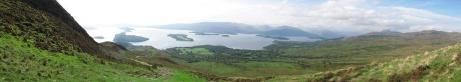
Der West Highland Way ist ein 152 Kilometer langer Fernwanderweg in Schottland und verläuft von Milngavie im Norden von Glasgow nach Fort William am Ben Nevis. Er führt also von den Lowlands in die Highlands. Die Landschaft wird nach Norden immer spektakulärer und so empfiehlt sich die Begehung in dieser Richtung. Der Trail ist gut markiert und am Weg befinden sich zahlreiche Übernachtungsmöglichkeiten vom Biwakplatz ohne Einrichtungen über den Campingplatz mit Waschmaschine und Trockner bis zum nobelsten Hotel. Für die 152 Kilometer braucht man zwischen 7 und 10 Tagen. Wir haben 9 Tage gebraucht. Als Karte haben wir die dreisprachige wasserfeste West Highland Way Map von Harvey (ISBN: 1-85137-223-7) im Maßstab 1:40000 im Gepäck. Hier ist auf einer Karte der komplette Weg mit allen Einrichtungen und weiteren Hinweisen verzeichnet. Allerdings nur der Weg und maximal 2 Kilometer rechts und links davon. Wer vom Weg abseits die Landschaft erkunden möchte braucht also weitere lokale Karten. 20.09.2006Nach einer durchgemachten Nacht fahren Julia, Elmar und ich mit dem 4:24er Regionalzug zum Düsseldorfer Flughafen. Unser Flug geht um kurz nach 6 mit Air Berlin über London Stansted, wo Simone aus Berlin zu uns stößt, nach Glasgow. Während des Fluges haben wir genügend Zeit unsere Uhren um eine Stunde zurückzustellen. In Glasgow treffen wir 16 Grad kaltes Regenwetter an. Mit einem Transferbus fahren wir vom Flughafen in die Stadt. Wir brauchen noch Brennspiritus für unsere Trangia Kocher und Trinkwasser. Da wir uns nicht sicher sind, wie der Brennstoffnachschub auf dem Weg aussieht, kalkulieren wir für vier Personen und 10 Tage vier Liter Brennspiritus ein. Das Trinkwasser ist natürlich kein Problem aber die Kaufhäuser begegnen unserem Wunsch nach Spiritus (Methylated Spirit) nur mit Achselzucken. Auch eine Apotheke kann uns nicht helfen. In der Buchanan Street liegt aber eine Filiale des Outdoorausrüsters Tiso. Dort finden wir den begehrten Stoff für 2£ pro 500ml. Das Zeug ist violett eingefärbt, brennt aber, wie wir in den nächsten Tagen feststellen, sehr gut.An der Central Station nehmen wir den Zug nach Milngavie. Nach ein paar Metern vom Bahnhof in die Stadt hinein befinden wir uns um 12:30 am Startpunkt für den West Highland Way, einer Steinsäule in der Einkaufsmeile.
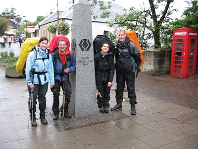
Der Start des West Highland Ways in Milngavie Ein freundlicher Schotte schafft es ein unscharfes Foto zu produzieren und da wir bis zum ersten offiziellen Campingplatz noch etwa 16 Kilometer vor uns haben, gehen wir zügig los. Nach wenigen Kilometern stören die sechs Flaschen Spiritus, die zwei Liter Trinkwasser im Platypus, der Kocher, das Zelt, der Schlafsack, die Isomatte und diverser anderer Kleinkram, der meinen Rucksack an die 26 Kilo Grenze bringt doch gewaltig. Julia läuft locker voran. Morgen bekommt sie zumindest den Kocher aufgeladen, denke ich mir die ganze Zeit. Der Weg geht ohne grössere Steigungen am Fluß Allander entlang und nach 5 Kilometern treffen wir auf unser erstes Loch (Craigallian Loch).
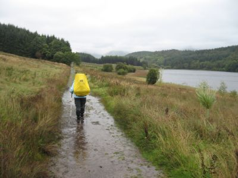
Nasser Weg am Craigallian Loch Nahe Blanefield müssen wir ein kurzes Stück nach links auf einer Straße laufen. Dort stellt sich erstmal die Frage, auf welcher Seite man bei Linksverkehr als Fußgänger besser aufgehoben ist. Bald geht der Weg aber nach rechts ab und nach 11 Kilometern kommen wir an der ersten Destillerie vorbei. Leider auch die einzige, die so dicht am Weg liegt. Kurze Zeit später gibt es auch schon den ersten Pub. Wir haben keine Zeit, da wir nicht wissen, wann es dunkel wird und wandern weiter auf einem langweiligen Weg parallel zur Straße bis Kilometer 16,5, wo es laut Karte bei Gartness ein Cafe und eine Campingmöglichkeit geben soll. Es gibt sie aber nicht. Ein vorbeikommender Lieferwagenfahrer fragt uns in schönstem Schottisch, also für mich vollkommen unverständlich, was wir denn so nass hier an dem Weg machen. Gottseidank kann Simone mit ihm kommunizieren, und er erzählt ihr, dass der nächste Campingplatz zwei Kilometer weiter ist. Er verlädt uns tropfnass in den Laderaum und fährt uns das kurze Stück. Laut Karte sind wir auf der Easter Drumquhassle Farm gelandet. Da dort keiner vor Ort ist, bauen wir unsere Zelte erst einmal auf der Wiese auf. Es gibt dort Duschen und eine trockene Gemeinschaftskochecke. Sogar zwei Wigwamhütten befinden sich auf der Wiese.
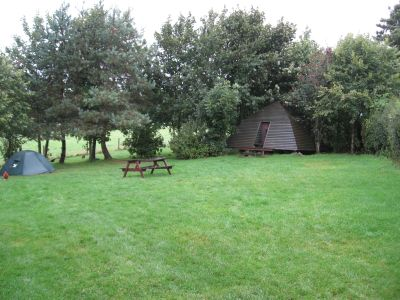
Campingwiese bei Easter Drumquhassle Nach einem Teller Nudeln fallen wir ziemlich tot in den Schlaf. 21.09.2006Das Wetter bessert sich. Nach dem Frühstück und dem Bezahlen (5£ pro Person) hört es um 11 Uhr auf zu regnen. Wir gehen an Drymen vorbei. Dort soll es ein Geschäft geben. Wir brauchen aber noch nichts. Erst einmal müssen die Rucksäcke leichter werden. Meiner ist es schon. Julia hat jetzt den Kocher. Dafür habe ich Simones Zeltgestänge bekommen, denn ihr Rucksack ist auch noch zu schwer. Naja, wenigsten ein Kilo weniger und einen halben Liter Spiritus haben wir auch schon fast verbraucht.
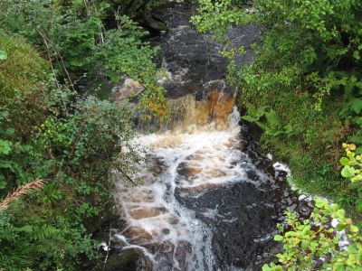
Ob das mal guter Whisky wird Nach Drymen geht es einige Kilometer durch den Garadhban Forest und danach über eine Hochebene, die zum ersten Mal einen Blick auf Loch Lomond und den 360 Meter hohen Conic Hill zulässt.
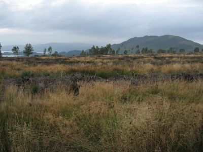
Conic Hill und Loch Lomond Da müssen wir rüber, beziehungsweise an der Nordseite 60 Meter unterhalb des Gipfels dran vorbei. Das Wetter ist mittlerweile richtig schön. Nach dem Abstieg kommen wir nach Balmaha. Dort soll es ein Geschäft geben, dass sich aber eher als kleiner Kiosk herausstellt. Es kann aber auch sein, dass wir das eigentliche Geschäft nicht gefunden haben. Den verzeichneten Pub finden wir aber und nehmen ihn auch in Anspruch. Wir schaffen es noch bis zum Campingplatz bei Milarrochy, wo wir gegen 18 Uhr unsere Zelte aufbauen. 19 Kilometer sind ja auch genug.
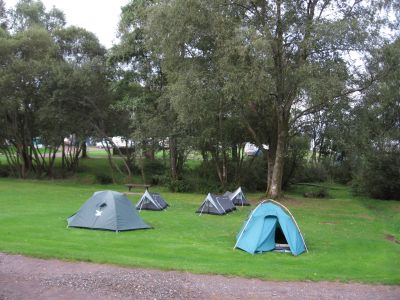
Campingplatz bei Milarrochy 22.09.2006Heute kommen wir früh los. Schon um 9:30 haben wir die Rucksäcke auf und gehen weiter am Ostufer des Loch Lomond entlang. Am Wegesrand gibt es immer wieder Brombeerbüsche und die Früchte sind reif und lecker. Wir passieren nach 2 Kilometern den Campingplatz in Cashell und machen Mittags Rast bei Kilometer 43 im Rowardennan Hotel. Es gibt ein Sandwich und ein lokales Ale. Das haben wir uns auch verdient, denn der Weg bot doch einige Steigungen, auf die aber schöne Fernblicke folgten.
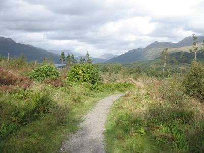
Nach jeder Steigung wird man belohnt Bei Kilometer 46 trennt sich der Weg. Die Stelle ist nicht einfach zu finden, da die Markierung fehlt. Geradeaus geht es weiter auf der Schotterstraße. Nach links führt ein kleiner Pfad hinunter zum See und dann immer nah am Ufer entlang. Nach wenigen Metern kommt aber wieder ein Holzpfahl mit einer stilisierten Distel, der den Westhighland Way markiert. Dieser Weg führt an Rob Roy's Gefängnis vorbei und hat es in sich. Wir haben für die 4 Kilometer über 2 Stunden gebraucht. Rob Roy's Gefängnis haben wir nicht gefunden. Kurz bevor dieser Weg wieder auf die Schotterstraße trifft gibt es bei Kilometer 50 eine Übernachtungshütte, deren Interieur und Geruch uns aber von der dort geplanten Übernachtung abhält.
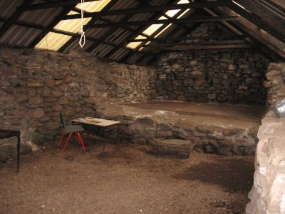
Rowchoish Hütte Außerdem nerven die Midges dort sehr. Gegen diese kleinen Biester hilft Autan leider überhaupt nicht. Wir gehen also weiter Richtung Inversnaid Hotel. Auf dem Weg dorthin gibt es einige Biwakmöglichkeiten. Am Hotel war für uns nichts mehr frei, aber immerhin durften wir im Tanzsaal zu Abend essen (Fish and Chips). Als ein Alleinunterhalter anfängt seine Orgel zu montieren trinken wir schnell aus, weil wir nun doch den Eindruck haben, dort als Exoten zu stören. 400 Meter hinter dem Hotel gibt es einen offiziellen Biwakplatz neben einem Bootshaus. Dort verbringen wir nach 18 anstrengenden Kilometern die Nacht. 23.09.2006Wir brechen auf und gehen weiter am See entlang. Ab und zu geht es noch rauf und runter, doch bald sehen wir das Ende des Loch Lomond.
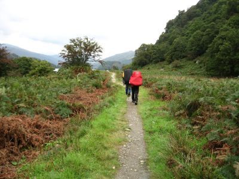
Immer am Ufer entlang Nach 60,5 Streckenkilometern gibt es eine weitere Schutzhütte bei Doune, die aber auch nicht zu einer Rast einlädt. Bei Kilometer 62 passieren wir die Fähre nach Ardlui. Will man zur anderen Seeseite, um dort das Geschäft oder den Campingplatz zu benutzen, muss man ein Signal setzen, damit der Fährmann es am anderen Ufer sieht.
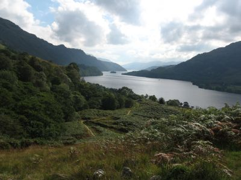
Blick zurück auf den Loch Lomond Wir gehen noch weiter bis Kilometer 65 und lassen uns auf dem Campingplatz Beinglas Farm nieder. Dort gibt es eine Bar, eine Dusche, eine Waschmaschine, einen Trockner und eine trockene Kochecke. Was will man mehr. Eigentlich nichts. Es gibt aber noch mehr. Für den Abend hat sich eine lokale Band angesagt und es soll dort das Saisonende gefeiert werden. Da das wohl der einzige Event in der Region ist, ist der Campingplatz voll mit Zelten. Die Gruppe hat das Niveau einer schlechten Schülerband und hört gottseidank um 23:30 auf. Leider fangen dann aber drei besoffene Idioten im Nachbarzelt an Krawall zu machen und werden erst nach mehreren Beschwerden um drei Uhr nachts von der Polizei abgeholt.
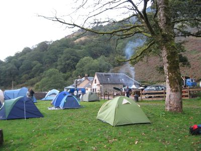
Beinglas Farm 24.09.2006Um sieben Uhr sind die Idioten aber wieder auf dem Gelände und wir beschließen diesen grausamen Ort früh zu verlassen, da an Schlaf eh nicht mehr zu denken ist. Eine gute Entscheidung, denn so können wir die Zelte noch trocken abbauen. Kurze Zeit später fängt es an zu regnen. Der Weg verläuft nun abwechselnd rechts und links von der A82. An einer Unterführung nutzen wir die einzige trockene Stelle der heutigen Etappe für eine kurze Rast.
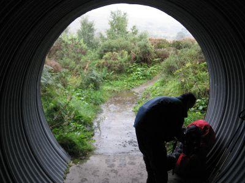
Rast in der Röhre Bei Kilometer 75 besteht die Möglichkeit nach Crianlarich abzubiegen. Dort gibt es ein Geschäft, Post, einen Pub und ein Cafe. Wir gehen aber weiter und erreichen kurze Zeit später die West Highland Way Mitte. Kein Hinweisschild, aber es geht häufiger kurz und knackig rauf und wieder runter. Langsam sinkt die Stimmung und das Wasser in den Schuhen steigt. Simone kommt dann mit dem guten Vorschlag in Auchtertyre nicht wie gewöhnlich das Zelt aufzubauen, sondern einen festen Wigwam zu nehmen. Der ist zu viert auch nicht viel teuerer aber bequemer und man kann morgens halbwegs trocken starten.
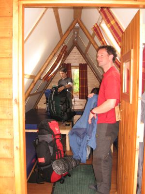
Unser Wigwam. Klein aber trocken. Diese kleine Hütte hat vier Pritschen, elektrisches Licht, einen Kühlschrank und eine Heizung. Außerdem kann man die Duschen, Toiletten und die Küche in einem Gemeinschaftgebäude nutzen. 25.09.2006Wir gehen um 10 Uhr los. Es ist trocken und es sieht so aus, als würde es auch so bleiben. Nach 4 Kilometern erreichen wir Tyndrum. Dort gibt es mehre Geschäfte, die zum Teil auch sonntags geöffnet haben. Wir füllen unsere Vorräte an einer Tankstelle und einem Mini Markt auf, die direkt am Weg liegen.
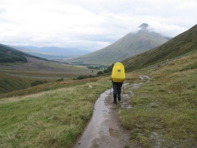
Talweg von Tyndrum nach Bridge of Orchy Hinter Tyndrum geht es weiter nach Norden immer in Sichtweite zur A82 durch ein Tal nach Bridge of Orchy. Dort befindet sich am Bahnhof eine Massenunterkunft und wenig später kommt man direkt an der Straße am Hotel Bridge of Orchy vorbei. Dort gibt es auch eine Schlafbaracke und einen Campingplatz. Wir gönnen uns dort aber nur einen Tee, eine Cola Light oder ein Ale, je nach vorlieben. Dabei entspinnt sich auch die Überlegung, ab wie viel Alkoholkonsum man als Gewohnheitstrinker gilt. Ein Ale pro Tag wird aber von allen akzeptiert. :-) Wir wollen heute aber noch ein wenig weiter und zwar bis zur Biwakwiese beim Inveroran Hotel bei Streckenkilometer 100. Ein kleiner Berg mit Aussicht auf den Loch Tulla trennen uns noch davon, doch um 18:30 haben wir die kleine Wiese direkt an einem Fluß gefunden. Ein wunderschöner Platz, an dem wir nach dem Zeltaufbau erst einmal kurz im Fluß baden. Kurz, weil die Wassertemperatur nicht mehr zulässt. Beim Kochen merken wir dann schnell, dass nicht nur wir den Platz toll finden sondern auch Millionen von Midgets. Diese kleinen Biester beißen einen wo sie können. Da es windstill ist, müssen wir diese schlechten Flieger anders an der Landung hindern und so essen wir im Gehen. Das hilft.
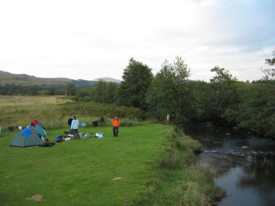
Der Biwakplatz am Inveroran Hotel Später gehen wir in die Hotelbar auf ein weiteres Ale und unseren ersten Whisky. Sind wir jetzt Gewohnheitstrinker? Abends gab es dann noch einen grandiosen Sternenhimmel, der gutes Wetter für den nächsten Tag versprach. 26.09.2006Es weht ein leichter Wind. Der verhilft uns zu einem mückenfreien Frühstück im Sitzen. Wir brechen um 10:30 zu einer kurzen Etappe auf. Heute wollen wir nur bis Kilometer 115 zum Kingshouse Hotel gehen. Also mit 15 Kilometern fast ein Ruhetag.
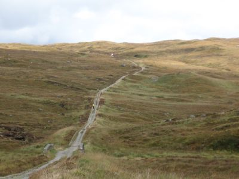
Auf einsamen Weg übers Hochmoor Dieses Teilstück geht auf einer alten Militärtrasse übers Hochmoor und bietet dank des sonnigen Wetters herrliche Fernblicke. Am Blackrock Cottage biegen wir nach links zum Glencoe Skigebiet ab. Die 500 Meter gehen wir extra, da dort ein Cafe sein soll. Es liegt an der Talstation eines Sesselliftes und bietet all die Trostlosigkeit, die Skigebiete im Sommer verbreiten. Laut einem WHW Ranger, den wir per Zufall treffen, soll der West Highland Way in den nächsten Jahren verändert werden und direkt am Skigebiet vorbei führen. Der Lift ist in Betrieb und bringt ab und zu Wanderer auf den 1108 Meter hohen Meall a Bhuiridh.
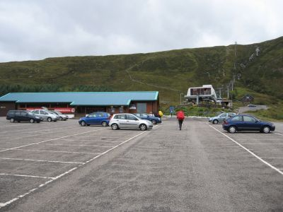
Im Kontrast zur Tagesetappe, das Glencoe Skigebiet Wir gönnen uns im fast leeren Restaurant einen Scone (Rosinenbrötchen) mit Butter und ein Bier. Wieder nicht das einzige für heute. Um 16 Uhr machen wir uns auf den Weg zurück zum West Highland Way und zum Hotel. Ein junger Hund verfolgt uns und will beharrlich mit uns gehen. Ein Besitzer ist nicht in Sicht und so folgt er uns bis zum Hotel. Dort fangen wir ihn mit Hilfe des Hotelpersonals ein und übergeben ihn. Keine Ahnung, was mit ihm passiert ist. Wir essen abends vegetarisch. Wir verzichten auf noch eine Mückennacht und nehmen ein Viererzimmer ohne Frühstück für 80£ im Hotel. Außerdem ist Regen angekündigt und nasse Zelte sind schwerer als trockene. 27.09.2006Da wir keine Zelte abbauen müssen und wir in weichen Betten anscheinend nicht mehr richtig schlafen können, kommen wir früh los.
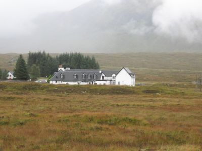
Kingshouse Hotel Wie angekündigt regnet es, aber nur leicht. Bis Altnafeadh verläuft der Weg auch ohne große Höhendifferenzen neben der A82. Dann aber kommt der sogenannte Devils Staircase. Es geht 250 Meter teilweise in Serpentinen einen Hang hinauf.
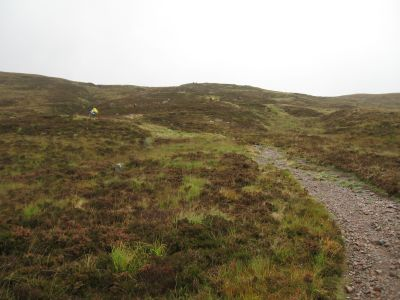
Devils Staircase 40 Minuten und einige Schweißtropfen später sind wir aber oben. Der Weg ist auch gut ausgebaut und einfach zu gehen. Nach dieser Anstrengung geht es dann 5 Kilometer relativ waagerecht an einem Hang entlang, bevor es dann nach Kinglochleven hinunter geht. Das letzte Stück verläuft parallel zu großen Wasserrohren, die zum Wasserkraftwerk von Kinglochleven führen. Neben dem Wasserkraftwerk gibt es einen Campingplatz auf dem wir uns für die üblichen 5£ pro Person niederlassen.
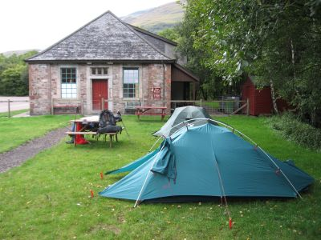
Campingplatz in Kinglochleven Die Attraktion von Kinglochleven ist eine Kletterhalle namens "The Ice Factor". Dies ist die erste Kletterhalle, die ich gesehen habe, in der es einen extra Raum zum Eisklettern gibt. Anscheinend produziert das Wasserkraftwerk genug Strom. Auch sonst gibt es in Kinglochleven alles, was der Wanderer braucht. Ein Geschäft, eine Post, eine Bank und einen Pub.
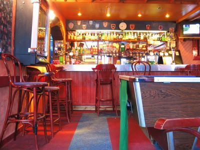
Der Pub. 28.09.2006Von Kinglochleven geht es auf dem West Highland Way erst einmal zügig fast 250m bergauf. Da bieten sich natürlich einige schöne Aussichten zurück. Dann geht es durch ein Hochtal an zwei verfallenen Gebäuden vorbei in einem langen Rechtsbogen um den Mullach nan Coirean herum.
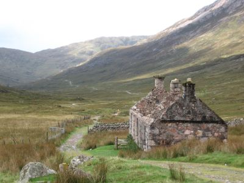
Im Hochtal Natürlich fing es auch hier nachmittags wieder an zu regnen. Aber das war uns jetzt egal. Die Etappe ist zwar mit 20 Kilometern recht lang aber sie führt uns zu einem Campingplatz bis an den Fuß des Ben Nevis und damit fast bis Fort William, unserem Ziel. Kurz vor dem Campingplatz gibt es einige Waldgebiete zu durchqueren. Der Platz selber ist sehr großzügig angelegt und bietet mit Duschen, Waschmaschinen und Trocknern allen Comfort. Abends gehen wir im nahe gelegenen Restaurant essen und beschließen den Ben Nevis am nächsten Tag nicht zu besteigen, sondern nach Fort William weiterzugehen. Wir schieben unseren Entschluß auf das Wetter, denn der Gipfel ist die ganze Zeit von Wolken eingehüllt. Aber auch die Blasen an den durchgelaufenen Füssen sind ein Grund. 29.09.2006Wir gehen die letzten 3 Kilometer vom Campingplatz bis nach Fort William. An einem Kreisverkehr steht ziemlich unspektakulär ein Schild, das auf das Ende des Weges hinweist. Ein freundlicher Schotte macht diesmal ein scharfes Foto von uns.
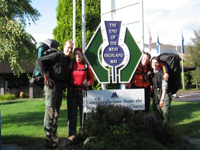
Geschafft ... und danachDer Rest des Schottland Aufenthaltes war dann "richtiger" Urlaub. Sind noch am selben Tag mit einem Citylink Bus von Fort William nach Inverness gefahren und haben uns dort einen Wagen gemietet. Mit dem sind wir dann durch den einsamen Norden Schottlands gefahren. Angeschaut haben wir uns unter anderem Dornoch, Dunrobin Castle, Wick, John o'Groats, Dunnet Head, Dunnet Beach, die gesamte Nordküste, Ullapool, Eilean Donan Castle, Loch Ness und Inverness. Von Inverness sind wir dann mit dem Zug nach Glasgow gefahren und von dort am nächsten Tag nach Deutschland zurückgeflogen.Unsere Streckenaufteilung
Einrichtungen unterwegs
Informationen:Die offizielle Seite des WHWEinmal im Jahr kann man Strecke auch unter 35 Stunden laufen :-) Drumquhassle Farm Campsite Campsite Beinglas Farm Inveroran Hotel Kings House Hotel Blackwater Hostel and Campsite in Kinglochleven Glen Nevis Campsite Man kann seinen Rucksack auch von travel-lite befördern lassen Dunrobin Castle Eilean Donan Castle |